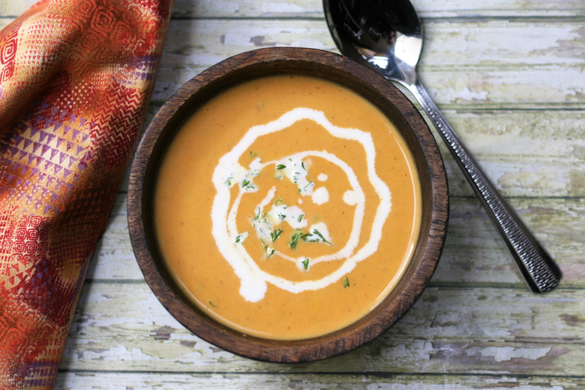

Spicy Pumpkin Soup recipe
Spicy Pumpkin Soup

Description
A thick, hearty, spicy pumpkin soup.
Ingredients
- 2 ½ cups chicken broth
- 1 (15 ounce) can pumpkin puree
- ½ onion, chopped
- 1 clove garlic, minced
- 1 teaspoon Cajun seasoning
- ½ cup heavy cream
Steps
- Heat chicken broth, pumpkin puree, onion, garlic, and Cajun seasoning to a boil in a saucepan over medium-high heat.
- Reduce heat to low and simmer for 45 to 60 minutes, stirring every 15 minutes.
- Stir in heavy cream before serving.